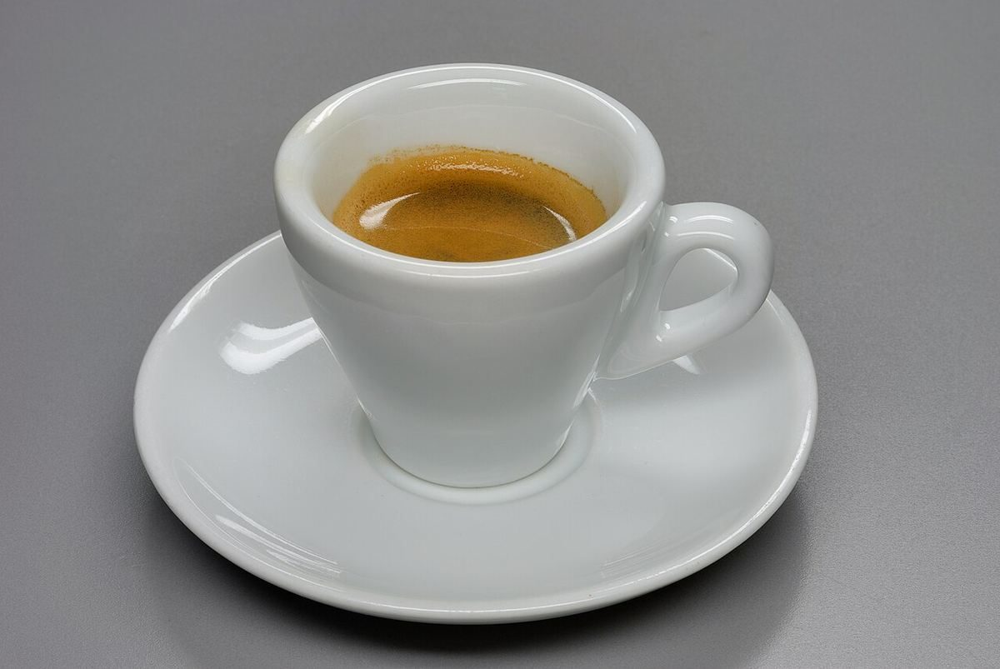

店のこと
お店のご案内
確認できているのは所在地とInstagramだけです。ほかは準備中です。
制作側の連想
犬小屋の部位を、もう少しくわしく
トップの図の六つの部位を、短い言葉で説明します。どれも一般的な犬小屋の見立てで、制作側の連想です。お店の理念・由来とは無関係で、お店の設備や商品を示すものでもありません。
- 1切妻屋根雨を流すために、山形に組んだ屋根。
- 2出入口正面にあけた、アーチ形の入り口。
- 3壁板縦に張り並べて、四方の壁をつくる板。
- 4床板地面から離して張る、足もとの板。
- 5束(つか)床を持ち上げて支える、短い脚。
- 6庇(ひさし)出入口の上に差し出した、小さな屋根。
写真帯(イメージ)
木のテーブルと窓辺の写真





写真はイメージです。お店のものではなく、お店で提供している商品や店内を示すものでもありません。